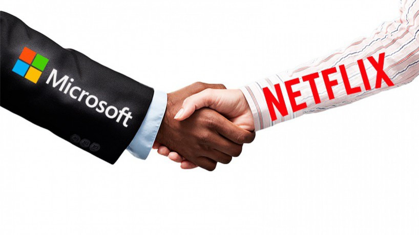

Reuters acredita que a Microsoft vai comprar a Netflix em 2023
A Microsoft vem fazendo um grande esforço para oferecer um serviço de streaming de jogos para vários dispositivos.

De acordo com novas informações fornecidas pelo portal Reuters, parece que a Microsoft já tem um novo alvo para uma futura aquisição em 2023, e será a gigante do streaming, a Netflix.
O site chegou nesse resultado por vários motivos, sendo que um deles é como a Microsoft vem criando parcerias com a Netflix nos últimos meses, além disso, o presidente da Microsoft, Brad Smith, está no conselho de administração da Netflix.
Outro ponto observado pela Reuters é sobre o esforço que a Microsoft vem fazendo para oferecer um serviço de streaming de jogos para vários dispositivos. Como lembrete, a Netflix está investindo pesado no mercado de jogos.
A empresa de streaming já fez algumas aquisições de estúdios de jogos em 2022, ou seja, uma fusão entre a Microsoft e a Netflix só beneficiaria a empresa de streaming.
LEIA MAIS
1 - Segunda temporada de Vinland Saga ganha novo trailer
2 – Sonic Frontiers ultrapassa 2,5 milhões de cópias vendidas ao redor do mundo;
De qualquer maneira, esse tipo de informação é confidencial e ninguém sabe exatamente se isso pode acontecer (ou já está rolando). A Microsoft já deixou bem claro que vai fazer muitas aquisições em vários meios de entretenimento.
Em algumas semanas vai completar um ano desde que a Microsoft anunciou que está comprando a Activision Blizzard por US$ 68,7 bilhões, acordo que deve ser concluído até 2023.
Sendo assim, caso essa informação da compra da Netflix seja verdadeira, a Microsoft só deve fazer alguma coisa após a compra da Activision Blizzard ser aprovada.